package scanner: queries the tex istallation for installed packages and highlights missing packages
package completion
basic annotation support in internal pdf viewer
improved render speed, especially on mac
speed-up loading of hidden documents (option: automatically load included files)
speed-up command completion window, especially citations
improved log panel
improved dtx highlighting
added support for LilyPond book (.lytex)
Edit -> Line operations now also work with selections
fix: input method bug
fix: shortcuts containing arrow keys did not work in japanese
more bug fixes, e.g. tooltip does not disappear instantly anymore
updated poppler and on Windows Qt (4.8.5)
structure tree view: context menu entries to recursively collapse/expand the structure
improved hard line wrap with joining lines
View -> Focus Viewer now also works for the windowed viewer
better detection of LanguageTool and dictionaries
"Align Table Columns" now works also for tabu/longtabu
many bug fixes: editable user templates, for } in rtl-languages, pinyin input method problem on mac, ...
the documentation pdf of a package can be displayed in the internal PDF viewer
retina support on mac complete for modern style
embedded viewer can be enlarged/reduced to take the whole screen for better reading
last open (and unclosed) environment can be closed by alt+enter
"Align Table Columns" does now work with more environments
template resources are now configured via template_resources.xml and are in utf-8
basic Pweave highlighting
added % !TeX spellcheck = ... magic comment
new macro trigger depending on the current syntax highlighting
improved bidi support for rtl languages
several small corrections
new %BEGIN_FOLD ... %END_FOLD comment to mark arbitrary regions as foldable
add support to display CJK and Cyrillic in PDF viewer
increased maximum possible tab width to 32
fix basic input method support
fix missing templates on Linux and Mac OS X
fix vanishing menu bar on Mac OS X
fix crash when saving as an already open file
fix viewer might change size because of long status messages
changed shortcuts for next/prev document to Ctrl+PgDown/Up
several small corrections
new template system
improved fold panel
added support for forward/backward mouse buttons in editor and viewer
context menu for inline preview (allows copying of preview image)
option to load all included files in order to have a complete ref/commands overview
added "Open" context menu entry and link overlay for \bibliography{} commands
show image preview on hover over graphic name
several bug fixes (pdf scolling range, user template path, OSX-related bugs, ...)
cursor history (go back/forward)
references, packages and included file names become links on Ctrl+MouseOver
insertion of handwritten equations (Windows 7 only, using TexTablet)
improved table-code formating, including options to specify the desired format
metadata support in LaTeX templates and table templates
checking for the correct version of the runtime library
more context menus (fold panel, bookmark panel)
optionally more bold cursor for better visibility
line operations: move up/down, duplicate
windows installer: add possibility to associate .tex files with TXS
several bug fixes (crashes, compilation, focus, ...)
new build system which allows easier combination of several commands
support many new tools: xelatex, lualatex, biber, latexmk, texindy
embedded pdf viewer
bookmark manager and persistent bookmarks
inline grammar checking using LanguageTool
basic syntax highlighting for lua and for dtx files
biblatex support
citation API to insert citations from other applications (JabRef plugin available)
table autoformating
improved appearance
update checker
extended scripting: gui/dialog creation, access to other documents/programs/menus, background mode and events
crash protection
many small improvements
several bug fixes
list of commands accepting \ref/\cite-references can be changed
remember search history
support for different dictionaries per document
find-invalid-bracket feature
almost word level inverse pdf search
complete file names in graphic including macros
improved BibTeX auto calling
more methods available for scripting
several bug fix (especially crashs in the pdf viewer/syntax check/structure view) and minor improvements
improved preview:
Pdf viewer can show multiple pages in continous fashion
Pdf viewer works non-blocking (multi-threaded)
preview works with included files
key replacements can trigger arbitrary user macros
double quote replacement can easily be selected from predefined list
completer distinguishes between usual, most often used and all possible commands
saving/loading profiles working
more environments are syntax highlighted
as always, bug fixes and small improvements
online latex syntax check has been extended
number of columns is checked in tabulars
\usepackage and \documentclass are interpreted to decide which commands are valid in the document
new commands added
TXS automatically detects parent/child relation in loaded documents and acts accordingly. So normally no master mode is needed anymore.
improved preview:
Pdf viewer can show multiple pages
Pdf viewer supports a presentation mode and multiple views
Pdf viewer has a new overview and clock dock
Selection preview become faster and is shown within the text
as always, bug fixes and small improvements
integrated pdf viewer with forward/reverse search
online latex syntax check (for simple errors)
support to manipulate tables (add/remove lines,columns or \hline)
inserted brackets are automatically closed
option to limit line length with hard wraps
word repetitions are marked as possible style error
as always, bug fixes and small improvements
some performance issues on mac have been adressed. It should feel faster for long sible lines on mac.
more than one overlay can be shown at the same time e.g. for syntax highlighting and spell checking
command replacement in completed commands was added
a cut buffer was added. If selected text is replaced with a command via completion, the removed text is used as argument for the inserted command (if applicable)
tool tip in completer shows the surrounding of the label to which the selected reference is pointing
profiles containing predefined short cuts, menu redefinition, editor settings can be imported from a file
when waiting with text cursor on an environment name, a mirror cursor is generated which allows the renaming of the environment (\begin and \end simultaneously)
delete word, a command or an environment by typing ALT-del
spell checking is only done in known text commands
some dialogs adapted to cope better with small screen sizes
lots of bugs removed after user feedback
User Tags can use java script to manipulate the current document. The manipulation is done via direct cursor handling. If further functionality is needed, feel free to open a feature request.
some performance issues on mac have been addressed. Still not perfect, but it should feel much faster on mac.
math constructs can be previewed with mouse hover over the expression limit ($, begin{equation},...)
a customizable tool bar is available
the latex expressions in the Math/Latex-Menus can be changed to user preferred versions.
global find over all open documents improved
support of transparent versioning of text documents via svn
structure view and custom command completer are updated as you type
the structure view marks some aspects with colours like being part of the appendix or missing include files
if a master document is defined, references and labels from open (!) subdocuments can be used for completion as well as for interactive label checking
dde commands can be modified to start a corresponding program if it is not running
if a started latex freezes up, you can kill it by pressing escape after 2 seconds
the folding is now actually useful: mismatched brackets will not disturb it anymore and folded blocks can be edited
lots of bugs removed after user feedback
TeXstudio has been diligently extended for the last months. The subsequent list gives a probably incomplete overview of new and changed functionality:
First steps for dynamic syntax highlighting have been implemented. For example references in in commands like \label or \ref are checked and are marked especially if the reference does not exist (in case of referencing) or if it has been defined multiple times.
The word completion system has been extended. It now uses “kile”-word lists which extend the number of known commands considerably. The key Tab can be used to complete common word bases in the present suggestion list like it is done in bash shells. Furthermore it can also complete normal text by proposing earlier used text parts. The two modes are distinguished by a backslash as starting letter. And finally “User Tags” (user defined text blocks) can be inserted by using user defined abbreviations which replaced in the completion process. The old behavior of using key sequences for inserting user tags certainly is still available. And lastly user defined latex commands are automatically scanned and can be used for command completion.
Apart from using wizards, new documents can be created by using templates. User can add own templates which can be edited or removed later on if necessary.
The symbol panel was extended. It was also extended by “kile” symbol list. It also can insert “tags” from textual lists. And finally the column count automatically adapts to the available horizontal space. Not to mention that unwanted symbol lists can be hidden.
The symbol list selector was moved to the left edge to give more room for the symbols, like it was done in texmaker.
Hover help was implemented. Hovering the cursor over standard latex commands will present tool tip help. If it is hovers over references, the corresponding text passage which contains the label is shown as tool tip.
A preview for selected text can be shown either in the status panel or as tool tip.
The status/log/error panel can also be used in a tabbed manner if desired.
The online spell checker handles escaped chars like “a or \”{a} now correctly. It also refrain from spell checking in (some) latex command options like \ref{label} and some more.
The context menu of the structure view gives some useful option like selecting a complete section or indenting a section which means changing \section to \subsection and accordingly all included headings as well.
A thesaurus was added. It allows search for word parts as well.
For sure, lots of bugs have been squashed !
Before using TeXstudio, you should configure the editor and latex related commands via the "Configure TeXstudio" command in the "Options" menu ("Preferences" under Mac OS X). Note that there are two levels of detail. More advanced or less often used options are only visible if you toggle "Show advancde options" in the lower left corner.
You may change the default encoding for new files ("Configure TeXstudio" -> "Editor" -> "Editor Font Encoding") if you don't want utf8 as encoding. Don't forget to set the same encoding in the preamble of your documents. (e.g. \usepackage[utf8]{inputenc}, if you use utf-8).
TeXstudio can auto detect utf-8 and latin1 encoded files, but if you use a different encoding in your existing documents you have to specify it in the configuration dialog before opening them. (and then you also have to disable the auto detection)
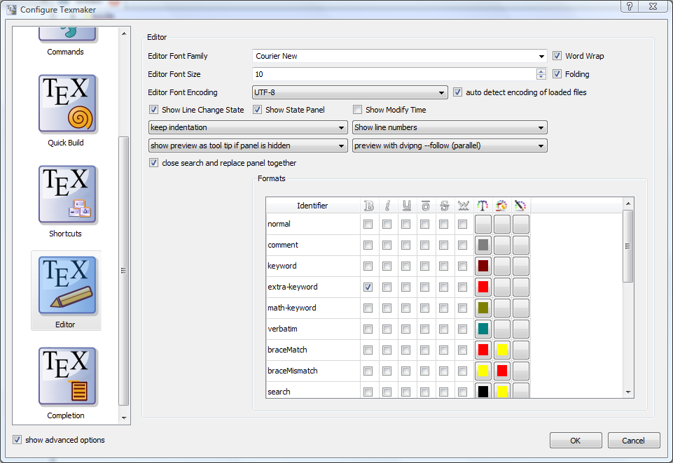
TeXstudio can't compile yours documents if the paths to the LaTeX related commands are wrong.
The default settings should work with the recent and standard LaTeX distributions, but you could have to modify them ("Configure TeXstudio" -> "Commands"). To change a command, just click on the button at the end of the corresponding line and select the command in the file browser : TeXstudio will adapt automatically the syntax of the command.
The % character represents the name of the file without the extension and the @ character will be replaced by the current line number. If you need more options (e.g. absolute paths) use ? and look at the instruction on the bottom of the configuration dialog.
Section Forward/Inverse search gives some example commands for common viewers.
You can always restore the original settings using the revert button to the right.
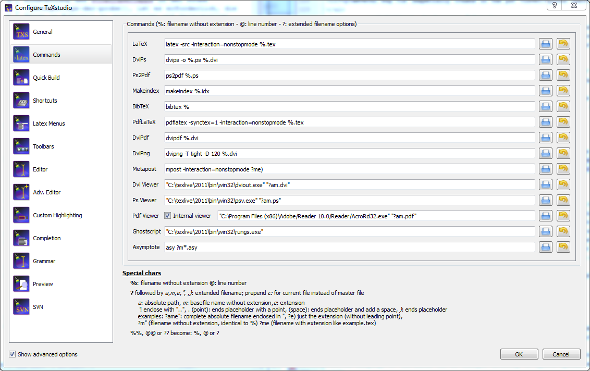
TeXstudio provides general commands for translating latex.
The default settings use "pdflatex" and the internal pdf viewer. Other commands and viewer can be selected as well as a different bibliography translator.
The "embedded pdf viewer" does not open a new window for viewing the pdf document but presents it directly next to the text in the editor.
A useful alternative might be using the "latexmk" as compile command (if the command is installed on your system), as it handles dependencies with biblatex and index very well.
The advanced options allows finer customization which is in general not necessary.
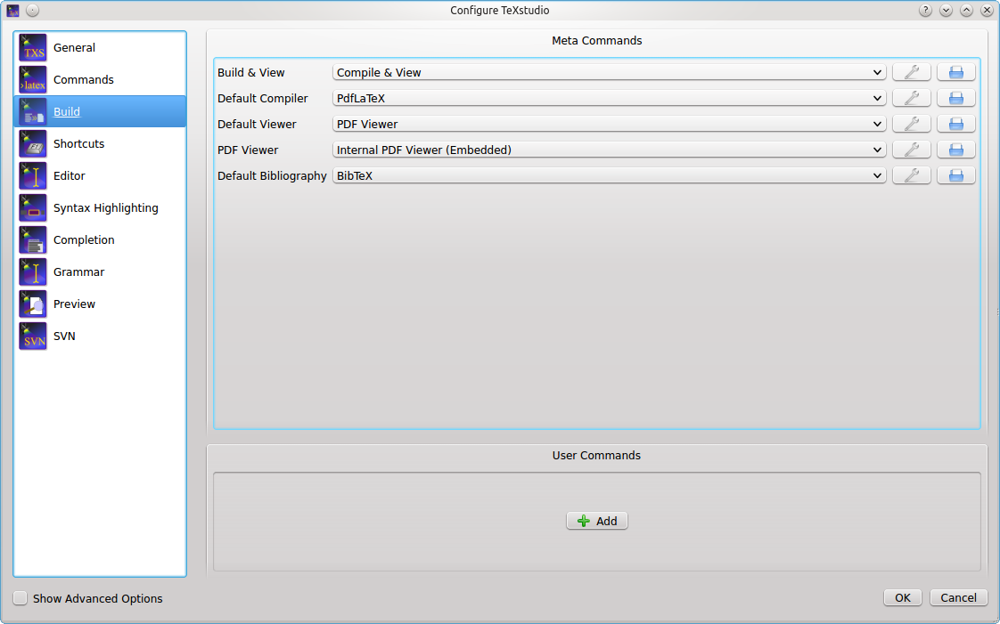
User commands can be defined here by "adding" them. Each user command has a name like "user%n:" where "%n" is a number. After the colon a name can be stated which is shown in the tools menu. The user commands can be activated either by short cut (alt+shift+F%n) or by the tools menu (Tools/User).
If you enable the advanced options, you can configure the build system in more details.
Every txs-command is a list of external programs/latex-commands and other txs-commands to call. An external program can be called with its usual command line, while a txs-command with id "foobar" is called by txs:///foobar.
The commands in the list are separated by |, which is just a separator (i.e. it will not pass the stdout from one program to the stdin of the next).
Each of these txs-command has a unique id, which is shown as tooltip of the displayed name for "normal" commands and in the edit box for user commands. Some important commands are usual: txs:///quick (Build & View, the old quickbuild), txs:///compile (Default compiler), txs:///view (Default viewer), txs:///latex (latex), txs:///pdflatex (pdflatex), txs:///view-pdf (Default Pdf Viewer), txs:///view-pdf-external (External pdf viewer).
For example, in a typical build configuration you might call txs:///quick by pressing F1, which calls txs:///compile, which first calls txs:///pdflatex that calls the actual pdflatey, and then calls txs:///view, which calls txs:///view-pdf, which calls txs:///view-pdf-internal, which displays the pdf.
There is no difference between commands defined as command on the command config page, commands defined as build on the build config page, or commands defined as user commands. They are just separated in the GUI to simplify the interface.
This also means that you can change every command as you want, ignoring its old definition (you could even change its id, when editing the ini file.).
There are however three always defined internal commands, which can only be called and not modified:
| txs:///internal-pdf-viewer | Opens the internal viewer for the current document |
| txs:///view-log | Views the log file for the current document |
| txs:///conditionally-recompile-bibliography | Checks if the bib files have been modified, and calls txs:///recompile-bibliography, iff that is the case |
The internal pdf viewer also accepts the following options (txs:///internal-pdf-viewer) to modify its behaviour:
| --embedded | Opens the viewer embedded |
| --windowed | Opens the viewer windowed (default if no option is given) |
| --close-(all|windowed|embedded) | Close all open viewers, or just viewers of a specific kind |
| --preserve-existing | Does not change any existing viewers (i.e. always opens a new one) |
| --preserve-(embedded|windowed) | Does not change any existing embedded/windowed viewers |
| --preserve-duplicates | Only opens the pdf in the first opened viewer |
| --(no-)auto-close | If the viewer should be closed, when the corresponding tex file is closed (default: auto-close iff embedded) |
| --(no-)focus | If the viewer should be focused, when it is opened (default: focus iff windowed) |
It is also possible to modify the arguments of called subcommands with argument modifiers or by adding a new argument . These modifiers are passed through called lists, so it will always change the arguments of the finally called program, even if the directly called subcommand is just a wrapper around another command:
| txs:///foobar --xyz | This will add the xyz option | |
| txs:///foobar[--xyz=123] | This will change the value of the xyz option to 123 (i.e. removing any xyz option defined in foobar) | |
| txs:///foobar{--xyz=123} | This will remove --xyz=123 from the foobar command line, ignoring xyz options with other values | |
| txs:///foobar{--xyz} | This will remove any --xyz option from the foobar command line, regardless of its value | |
| txs:///foobar{} | This will remove all options from the foobar command line, leaving only the name of the executable |
Finally, there are also hidden options, which can only be changed by modifing the ini-file: Tools/Kind/LaTeX, Tools/Kind/Rerunnable, Tools/Kind/Pdf, Tools/Kind/Stdout, Tools/Kind/Viewer, which give a list of commands that are treated as latex compiler (e.g. show the log afterwards), rerunnable (repeat command call, if there are warnings), pdf generators (e.g. pdflatex), commands that prints to stdout (e.g. bibtex), and viewers (e.g. only open once).
This panel allows the setting of some general aspects.
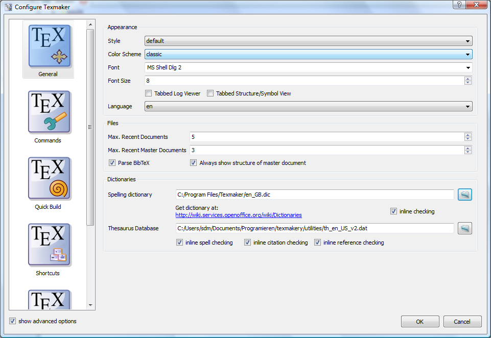
TeXstudio checks the spelling while you type. If the typed text is within a LaTeX-command, TeXstudio takes information from the command-completion-list to determine whether the text is natural language which needs to be checked or just command options which are left alone. Only known LaTeX-commands are considered to be checked in its options! For more information known commands and packages see the section on completion
The spell checker uses the OpenOffice.org dictionaries. By default GPL French, British and German dictionaries are distributed with TeXstudio. Users can download others dictionaries at http://wiki.services.openoffice.org/wiki/Dictionaries. All dictionaries are a stored in one directory.
To make life easy TeXstudio lets you choose a preferred language for the spell checker. However if you frequently work with files in different languages you may want to override the default behavior. This can be done in two ways. First you can specify the language of the file via the language menu in the status line. This setting will be lost as soon as the file is closed. To permanently save the language of the file TeXstudio supports a special "magic comment" % !TeX spellcheck = de_DE. If this comment is present in a file, its language is automatically set when the file is loaded.

The thesaurus uses OpenOffice.org 2.x databases. Only GPL French and US-English and German databases are distributed with TeXstudio.
Users can download others databases here : http://wiki.services.openoffice.org/wiki/Dictionaries
The latex syntax checker takes the list of possible completion commands to determine if a command is correct.
Furthermore the completion list contains partially additional information to determine in which context a command is valid, whether it is valid only in math-mode or only in tabular-mode.
The grammar checker is based on the standard http API of LanguageTool, and requires a separate installation of LanguageTool and java.
Once LanguageTool is installed, you can try it by starting the LanguageTool standalone application, and start TeXstudio afterward. LanguageTool then creates a locally running server at the address http://localhost:8081/ and TeXstudio automatically connects to it at startup. When the connection is established, all typed paragraphs are send to LT and after a short delay the possible grammar errors are highlighted.
To automatically start LanguageTool with TeXstudio, you need to enter the path to LT jar in the grammar page of the config dialog. If the java executable is not in the default PATH, you also need to set the path to it there.
In the advanced config mode, you can also mark certain LT rules as "special" whose matches will then be highlighted in a different/customizable way. This can be useful to do a stylistic analysis, e.g. by creating a own rule in LT highlighting all verbs or all adverbs.
Independent from LanguageTool, TeXstudio also checks for repeated and bad (imprecise/slang) words. The repetition check looks several words behind and marks repetition of short words in the immediate surrounding and repetition of long words up to 10 words before. These distances and lengths can be changed on the advanced grammar config page.
TeXstudio has taken up completion word lists from kile which extended the number of known commands for completion considerably.
TeXstudio understands the use of \documentclass and \usepackage in order to select valid lists of commands for completion as well as syntax checking.
However TeXstudio allows one to select the additional word lists under
"Configure TeXstudio" -> "Editor" -> "". The names of the word lists corresponds to the package for which they are made. The list latex.cwl contains the standard latex commands.
Concerning auto completion, TeXstudio allows one to adapt the behaviour to your liking.
Following options are available:
If your favorite package is not yet present for completion (and then as well not for syntax check), you can provide a list of your own by placing a file "packagename.cwl" in the config directory. This directory is placed in ~/.config/texstudio under linux and usually "c:\Documents and Settings/User/AppData/Roaming/texstudio" under windows. Basically the file contains a list of valid commands. A Description of the exact format and an example are given in the appendix.
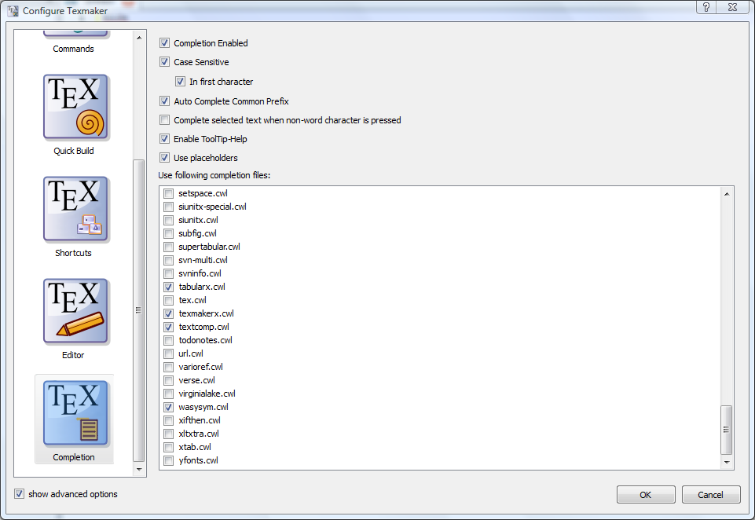
Shortcuts can be changed by double clicking on "Current Shortcut" or "Additional Shortcut". A shortcut can be selected from the drop down list or put in as text directly. If a shortcut should be set to default value or removed completely, the items "<default>" or "<none>" at the top of the list can be selected.
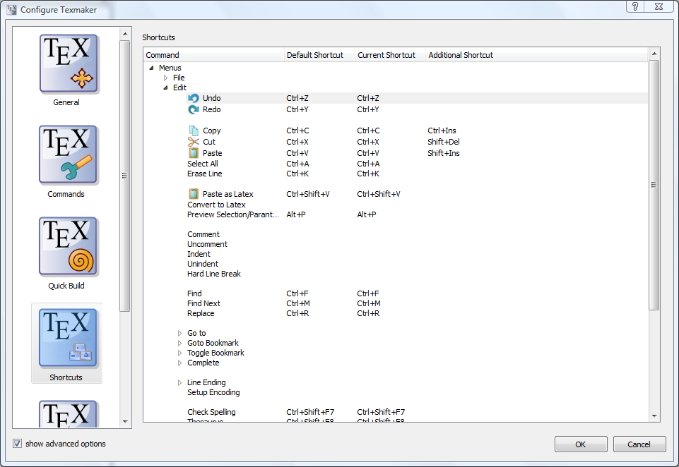
The Math/Latex-Menu can be adapted to user likings. For this menu items can be renamed and a new Latex-Code can be placed. The apropriate item can be be directly edited by doubleclicking on them.
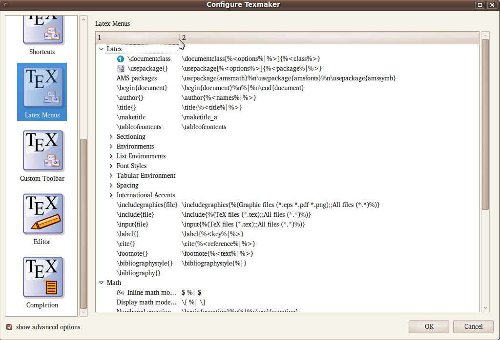
One Custom Toolbar is present in TMX. This toolbar can be filled with actions from the Latex-, Math- and User-Menu. Since many of those item don't have icons, user icons can be loaded as well. This is achieved by applying "load other icon" from the context menu on a item in the custom toolbar list in the configure dialog.
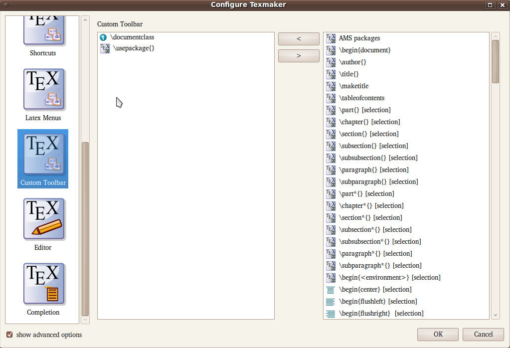
To provide documenten versioning, TeXstudio makes use of SVN (subversion). To make use of it, the SVN commandline tools need to be installed. Linux and Mac OSX normally provide already svn tools, for Windows, the installation of "SlikSVN" is recommended.
The complete path to the command "svn" and "svnadmin" need to be adjusted in the aprioriate field of the svn configure page, see below. Furthermore the user can choose the degree of automation, which TeXstudio provides.
"Automatically check in after save" allows TeXstudio to perform an svn check in after every save of a document, thus providing a very complete history of the creation of a document. Since text documents are rather small compared to disk spaces, size of the svn database should not be a problem. In addition newly saved files (save as) are automatically added to svn control,provided that the directory is alredy under svn control. If that is not the case, TeXstudio searches in "SVN Directory Search Depth" directory above the current diorectory for a svn controlled directory to which the subdirectories and the TeX-Document will be added. If no appropriate directory is found, a repository is automatically generated in a directory called "./repo" and the document is added. Thus the user does not need to look up the necessary commands to set up a repository. This functionality is only activated when "Auto checkin in" is enabled !
With "User SVN revisions to undo before last save" TeXstudio will perform undo as usually, but if there are no further undoable commands in the internal storage, the document will be changed to the previous version in svn history. Further undo commands allows one to back further to older revisions, whereas a redo goes forward to more recent versions. This is a more interactive approach than choosing svn revisions directly via a menu command, see section 4.3
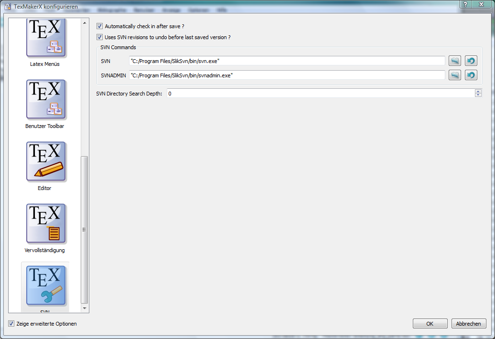
The standard commands (cut, copy, find...) can be launched via the "Edit" menu and the "Edit" tool bar.

To define the preamble of your document, you can use the "Quick start" wizard ("Wizard" menu).

This dialog allows you to set the main features of your document (class, paper size, encoding...).
Note : You can add other options by clicking the "+" buttons. All yours settings are recorded.
You can also type your own preamble model in the editor : with the "Copy/paste" or "Save As" commands, you can use it for a new document.
For new documents, templates can be used by using the command "File/New from template". A dialogue gives a selection of templates.
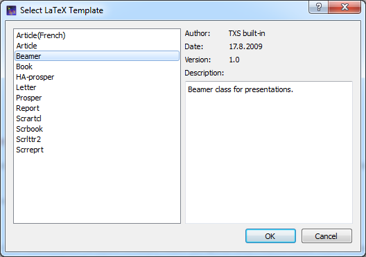
You can either create a new editor document from the template or create it as file(s) on disk and open these in the editor. The former option is not available for multi-file templates.
New templates can be created by using the command "File/Make Template" on a opened document which you like to have has a template. Note that this dialog currently does not support the full capabilities of the template system. In particular you cannot supply a preview image or create a multi-file template with it. You'll have to do this manually (see the template format).
User added templates can be edited or deleted by using the context menu in the template selection dialogue. Built-in templates can not be changed.
User templates are saved in the /templates/user/ subdirectory of the config directory.
In its simplest form, a template is only a .tex file. Multi-file templates can be created by packaging all files in a zip achive. Optionally, meta data is stored in JSON format in a separate file with the same name, but extension ".json" instead of ".tex" or ".zip". Currently the following entries are supported:
{
"Name" : "Book",
"Author" : "TXS built-in",
"Date" : "04.01.2013",
"Version" : "1.1",
"Description" : "Default LaTeX class for books using separate files for each chapter.",
"License" : "Public Domain",
"FilesToOpen" : "./TeX_files/chapter01.tex;main.tex"
}
FilesToOpen only has an effect for mutli-file documents. You may add a preview image next to the template file. Again, it must have the same name, but extension ".png".
To define a new part (section,subsection...) in your document with TeXstudio, just use this combo box in the tool bar :
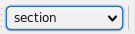
This will cause a dialog to pop up which allows you to define the style of the part (section,subsection...).
Note : the "Structure View" is automatically updated.

The "Structure View" (left panel) lets you quickly reach any part of your document. All you need to do is to click on any item (label, section...) and you will be taken to the beginning of the corresponding area in the editor. The mechanism for jumping to a line does not anymore only consider line numbers but really remembers text lines. Thus adding and removing lines will not lead to jumps to wrong locations.
A grey background shows the present cursor position in the text in the structure view as well. A greenish background denotes sections which are in the appendix.
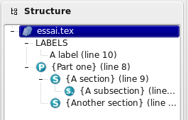
The "Structure View" is automatically updated as you type. You can also use the "Refresh Structure" ("Edit" menu) command at any moment.
Apart from labels,sections,includes and beamer blocks, comments starting with %TODO are also scanned for and presented as section of its own in the structure view. This can be used to create a kind of permanent bookmark in the text or just to note where some changes are still necessary.
The structure view also offers a context menu which allows one to copy/cut all text which belongs to a section (including subsection) and paste it before or after a section. Section can be indented/unindented which means that the hierarchy level is changed by one, i.e. \section is changed to \subsection, and all subsections are treated accordingly
For each file, three bookmarks can be used to speed up navigation : just click on a line number to add or remove a bookmark. When you have already defined three bookmarks, you must remove one of them to add a new bookmark. To jump to the line corresponding to a bookmark in the editor, just click on the buttons in the status bar.
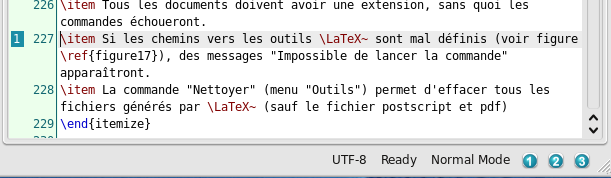
You can quickly set the format of a part of your text with this tool bar :
Additional option: a selected text can be directly framed by certain environments. Example: while clicking on the button "Bold" after having selected the word "Hello" , you will obtain the code: \textbf{Hello}.
This option is available for all the environments indicated by "[selection]" in the "LaTeX" menu.
The usual "spacing" commands are available in the "LaTeX" and "Math" menus. To insert quickly the "new line" LaTeX command, you can use the corresponding command in the toolbar (shortcut : Ctrl+Alt+return)
The usual list environments code can be insert quickly via the "LaTeX-List" menu.
Note : the shortcut for the \item command is Ctrl+Alt+H.
With the "Tabular" wizard ("Wizard" menu), t he LaTeX code for a tabular environment can be quickly inserted :

You can set the main features of your table.
Note : this dialog allows you to type directly the code in the cells.
The corresponding LaTeX code is automatically inserted in the editor.
TeXstudio provides some commands to ease handling of tables. The commands are located at LaTeX → Manipulate Table and in the Table toolbar. Please be aware that some unexpected results may arise, if the table constructing commands get too complex. Following commands are offered:
TeXstudio also allows block cursors. Press <Ctrl>+<Alt>+<Shift> and drag the cursor with the mouse. The block cursor works like a set of normal cursors. You can copy and paste text as usual. Also you can type in new text, which will be added in every row.

To help you to insert a "tabbing" code, you can use the "Tabbing" wizard ("Wizard" menu) :

To insert a picture in your document, just use the "\includegraphics" command in the "LaTeX" menu. Then, click on the "browser" button in the dialog to select the graphic file.
Note : you can insert a "figure" LaTeX environment ("LaTeX - Environments" menu) before inserting the picture.

Properly inserting figures is a challenge for LaTeX beginners and still quite a bit of text to type for the expert. Therefore TeXstudio offers a wizard for handling graphics insertion code in your document. "Graphics options" defines the optional parameter of \insertgraphics[options]{file}. While the most used width/height attributes can be easily set, alternatively you have full control with the user defined setting.
Place the graphic inside a figure environment if it does not have to be at an exact position in the text. Then LaTeX will determine an optimal position on the page.
By pressing the "Save as default" button the current settings (except file, caption and label) are stored and will hence be used as default when you open the wizard.
The wizard also comes into play when you drag drop an image file to your document or use copy in explorer and paste in TeXstudio. Together with the adjustable default parameters this makes insertion of new pictures very fast. Furthermore, if you start the wizard while the cursor is on picture code, the wizard is used to manipulate the existing picture settings.
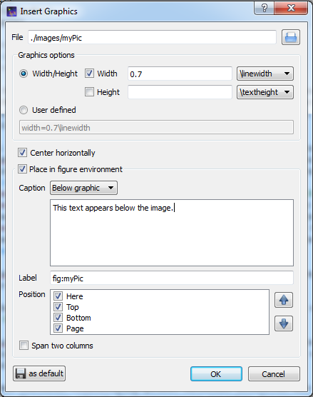
This toolbox in the toolbar allows you to insert quickly the label, cite, ref, footnote... code.
Note : the labels used in your documents are displayed in the "Structure View".
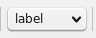
Additional option:for the \ref command, a dialog box allows you to select directly the label.
You can toggle in the "in-line math" environment with the "f(x)" button in the toolbar (shortcut : Ctrl+Alt+M) or with the "Math" menu. The shortcut for the "display math" environment is : Alt+Shift+M.
The "Math" toolbar allows you to insert the most currents mathematical forms (frac, sqrt...) like the \left and \right tags.

With the "symbols panels" in the structure view, you can insert the code of 400 mathematical symbols.

You can also define the format of your mathematical text via the "Math" menu.
For the "array" environments, a wizard (like the "Tabular" wizard) is available in the "Wizard" menu. With this wizard, you can select the environment : array, matrix, pmatrix.... The cells can be directly completed.

Whenever you press \ followed by a letter, a list of possible LaTex tags is shown where you select the right one. If you write additional letters the list is filtered, so that only the tags starting with the already written text are shown.
If the list contains words which all start with the same letter combination, you can press Tab to complete all common letters. If only one element is present in the list, Tab selects this one to do the completion, like Enter. This behaviour is similar to tab completion in bash shells.
You can also press Ctrl+Space to open this list whenever you want.
If a tag has different options, a short descriptive text is inserted into your text, telling you the meaning of each option. You can press Ctrl+Left, Ctrl+Right to select all positions.
Furthermore normal text can be completed by starting to type a word and pressing Ctrl+Space. All apropriate words in the current document are used as possible suggestions.
If a enviroment is to be inserted, typing in the beginning of the environment name and pressing Ctrl+Alt+Space gives suggestions for adequate enviroments which are inserted completely with \begin{env}..\end{env}
And finally user tags can be assigned a abbreviation which can also be used with completion. Just type in the start of the abbreviation and start the completion with Ctrl+Space. The abbreviation should show up in the completion list, especially marked with “abbreviation (template)”.
If you change a command by completing a new command, only the command name is substituted. The same is true for environments, where the environment is changed in the \begin- and \end-command.
TeXstudio has integrated a simple thesaurus. OpenOffice 2.x databases are used for this. By placing the cursor on a word and activating the thesaurus (Ctrl+Shift+F8 or Edit/Thesaurus), it tries to find synonyms for this word. Please be patient if you start the thesaurus at first time since loading the database just occurs then and can take a few moments.
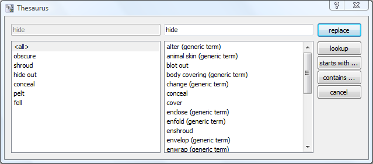
The first line to the left contains the word, for which a synonym is searched for. The list below gives a list of word classes. The can be chosen to reduce the number of suggestions. The column to the right contains the list of suggested synonyms. A selected word from this list apears in the first line to the right as proposition for replacement of the text. This word can be changed manually. It is also used to do further investigations for words and their synonyms which "start with" or "contain" that word. With "lookup" it can be directly used to look for a synonym for that word.
With the shortcut Alt+Del, the word under the cursor is deleted. If it is a command, the command is deleted including opening and closing braces. E.g. "\textbf{text}" leave "text". If it is an environment, the enclosing bengin/end are removed.
If you place the cursor on an environment name or the corresponding begin- or end-command, after a moment a mirror-cursor is activated on the environment name which allows synchronous change of the environment name in the begin- and end-command. So if you want to change a "\begin{tabular}...\end{tabular}" construction to "\begin{tabularx}...\end{tabularx}", place the text cursor on "tabular", wait for a second and then, after the mirror-cursor appears, change "tabular" to "tabularx".
If you select something and then start to type in a command and complete it, the selection is put in as first argument. E.g. you have a "text", select it and start typing "\textbf", command which is completed. The resulting text is "\textbf{text}"
The easiest way to compile a document is to use the "Compile" command or the "Build&View" command ("Compile" button - shortcut : F6). You can select the default command via the "Configure TeXstudio" dialog.
(You can also launch each command one by one in the "Tools" menu).
Note : the "Clean" command in the "Tools menu" allows you to erase the files (dvi, toc, aux...) generated by a LaTeX compilation (except the ps and pdf files).

With the "Quick Build" command, the log file is automatically displayed in the "Messages / Log file" pannel. While clicking on a number in the "Line" column, the cursor is placed on the corresponding line in the editor and the error is displayed.
Remark : a summary of the latex errors and warnings is displayed before the full log file.

The "Next Latex Error"and "Previous LaTeX Error" commands allow to get to the errors detected during compilation.
Lines with errors, warnings, bad boxes will be highlighted with red, yellow or blue background and you can jump between them using Ctrl+Up/Down. (Ctrl+Shift for errors only, Ctrl+Alt for warnings only, Alt+Shift for bad boxes only)
A tool tip will show more details of the mistake if you jump to a line (it is also shown if you move the mouse over the mark left from the line numbers).
TeXstudio allows you to work onto documents separated in several files.
To include a TeX file into your document, just use the "\include{file}" command in the "LaTeX" menu. The file will appear in the "Structure View". With a click on his name, TeXstudio will open it.
TeXstudio now understands parent/child relations of loaded documents (1 level only !). Therefore, as in "master document mode", only the parent document is compiled if compilation is tarted while working on a child document. Likewise labels and usercommands are known in all corresponding documents.
You can still define your "master document" with the "Options" menu. All the commands of the "Tools" menu will apply only to this document even when working on the "children" documents (you can even close the "master" document).
If a master document is set, labels and usercommands which are defined in any open document, can be used for completion in any open document. Thus you can insert easily a reference to a label which is defined in another subdocument, as long as that document is open in TeXstudio.
Note : you can leave the "master" mode with the "Options" menu.
The latex syntax checker takes the list of possible completion commands to determine if a command is correct.
The completion list contains partially additional information to determine in which context a command is valid, whether it is valid only in math-mode or only in tabular-mode.
Furthermore the correctness of tabulars is checked in a little more detail.
The number of columns is analyzed and checked in the subsequent rows. If more or less columns are given in a row, a warning maker is shown.
For the "bib" files , the "Bibliography" menu enables you to directly insert the entries corresponding to the standard types of document.
Note: the optional fields can be automatically deleted with the "Clean" command of the "Bibliography" menu.

Apart from the supported svn features already describes in section 1.8, TeXstudio supports two more commands.
"File/chekin" performs an explicit save and check in, with a input dialog which asks for an checkin in message which is stored in the svn history.
"File/Show old Revisions" pops up a dialog, which shows all alvailable revisions. A selection of an older revision leads to instatanious change of the current document to that older revision. You can can select and copy old parts to transfer them to the most recent version of your document, by copying the parts and then going back to most recent version. If you start editing that document directly, the dialog is closed and the present text is your new most recent version though yet unsaved.
TeXstudio allows you to insert your own macros (shortcuts : Shift+F1...Shift+F10). These macros are defined with the "Macros - Edit Macros" menu.
Macros can consist of simple text which is directly placed into txs. It can also be an "environment" which are automatically extended by begin/end and it can be a java script.
The needed functionality can be selected by checkbox.
The "abbreviation" is a pseudo-command for the latex completer. If the pseudo-command is completed, the macro will be inserted instead. Note that the pseudo-command needs to start with a backslash ("\").
"Trigger" is a regular expression which triggers the inclusion of the macro: When the last written characters match this expression, they are removed and the macro is inserted/executed. (see below for more details).
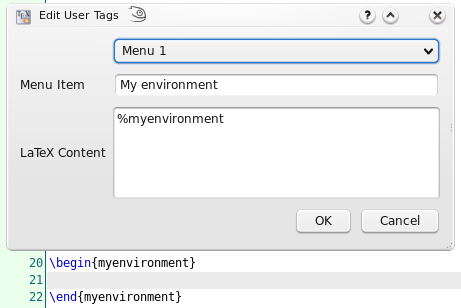
The following table gives an overview on the possible commands.
| Command | Description |
|---|---|
| Global scope | |
| alert(str), information(str), warning(str) or critical(str) | shows str in a messagebox with a certain icon |
| confirm(str) or confirmWarning(str) | shows str as a yes/no question in a messagebox |
| debug(str) | prints str to stdout |
| writeFile(name, value) | Writes value to file name (requires write privileges) |
| readFile(name) | Reads the entire file name (requires read privileges) |
| system(cmd) | Calls cmd and returns a ProcessX object which has this methodes:
|
| setGlobal(name, value) | Sets a temporary, global variable |
| getGlobal(name) | Reads a global variable |
| hasGlobal(name) | Checks for the existence of a global variable |
| setPersistent(name, value) | Sets a global configuration variable. (can change the values of the ini file, requires write privileges) |
| getPersistent(name) | Reads a global configuration variable. (can read all values of the ini file, requires read privileges) |
| hasPersistent(name) | Checks if a global configuration variable exists. (requires read privileges) |
| hasReadPrivileges() | Checks if the script has read privileges |
| hasWritePrivileges() | Checks if the script has write privileges |
| registerAsBackgroundScript([id]) | Allows the script to run in the background (necessary iff the script should handle events/signals) |
| triggerMatches | Matches of the regular trigger expression, if the script was called by an editor trigger. |
| triggerId | Numeric id of the trigger, if the script was called by an event trigger. |
| include(script) | Includes another script. Can be a filename or the name of a macro. |
| pdfs | List of all open, internal pdf viewers . |
| Editor object | |
| editor.search(searchFor, [options], [scope], [callback]) | Searchs something in the editor.
|
| editor.replace(searchFor, [options], [scope], [replaceWith]) | This function searches and replaces something in the editor. It behaves like editor.search apart from the replaceWith argument which can be a simple string or a callback function. If it is a function the return value of replaceWith is used to replace the match described by the cursor passed to replaceWith. |
| editor.undo(); | undo last command in editor |
| editor.redo(); | redo last command in editor |
| editor.cut(); | cut selection to clipboard |
| editor.copy(); | copy selection to clipboard |
| editor.paste(); | paste clipboard contents |
| editor.selectAll(); | select all |
| editor.selectNothing(); | select nothing (clear selections) |
| editor.find(); | activate "find panel" |
| editor.find(QString text, bool highlight, bool regex, bool word=false, bool caseSensitive=false); | activate "find panel" with predefined values |
| editor.find(QString text, bool highlight, bool regex, bool word, bool caseSensitive, bool fromCursor, bool selection); | activate "find panel" with predefined values |
| editor.findNext(); | find next |
| editor.replacePanel(); | replace (if find panel open and something is selected) |
| editor.gotoLine(); | activate "goto line panel" |
| editor.indentSelection(); | indent selection |
| editor.unindentSelection(); | unindent selection |
| editor.commentSelection(); | comment selection |
| editor.uncommentSelection(); | uncomment selection |
| editor.clearPlaceHolders(); | clear place holders |
| editor.nextPlaceHolder(); | jump to next place holder |
| editor.previousPlaceHolder() | jump to previous place holder |
| editor.setPlaceHolder(int i, bool selectCursors=true); | set Placeholder |
| editor.setFileName(f); | set filename to f |
| editor.write(str) | inserts str at the current cursors position (if there are cursor mirrors, str will be inserted by all of them) |
| editor.insertText(str) | inserts str at the current cursor position (cursor mirrors are ignored) |
| editor.setText(text) | replace the whole text of the current document by text |
| editor.text() | return the text of the complete document |
| editor.text(int line) | return text of line |
| Document object | |
| editor.document().lineCount() | Returns the number of lines |
| editor.document().visualLineCount() | Returns the number of visual lines (counting wrapped lines) |
| editor.document().cursor(line, [column = 0], [lineTo = -1], [columnTo = length of lineTo]) | Returns a cursor object. If lineTo is given the cursor has a selection from line:column to lineTo:columnTo, otherwise not. |
| editor.document().text([removeTrailing = false], [preserveIndent = true]) | Returns the complete text of the document |
| editor.document().textLines() | Returns an array of all text lines |
| editor.document().lineEndingString() | Returns a string containing the ending of a line (\n or \n\r) |
| editor.document().canUndo() | Returns true if undo is possible |
| editor.document().canRedo() | Returns true if redo is possible |
| editor.document().expand(lineNr) | Expands the line |
| editor.document().collapse(lineNr) | Collapse the line |
| editor.document().expandParents(lineNr) | Expand all parents of the line until it is visible |
| editor.document().foldBlockAt(bool unFold, lineNr); | Collapses or expands the first block before lineNr |
| editor.document().getMasterDocument(); | Returns the open document which directly includes this document |
| editor.document().getTopMasterDocument(); | Returns the open document which indireclty includes this document and is not itself included by any other document |
| editor.document().getMagicComment(name); | Returns the content of a magic comment, if it exists |
| editor.document().updateMagicComment(name, value, [create = false]); | Changes a magic comment |
| editor.document().labelItems/refItems/bibItems | Returns the ids of all labels/references or included bibliography files. |
| Document Manager object | |
| documentManager.currentDocument | Current document (usually the same as editor.document(), unless the script is running in background mode) |
| documents.masterDocument | Master document |
| [documentManager.]documents | Array of all open documents |
| documentManager.findDocument(fileName) | Returns the open document with a certain file name |
| documentManager.singleMode() | Returns if there is no explicit master document |
| documentManager.getMasterDocumentForDoc(document) | Returns the open document (possibly indirectly) including the given document |
| documentManager.findFileFromBibId(id) | Returns the file name of the bib file containing an entry with the given id |
| Cursor object | |
| cursor.atEnd() | returns whether the cursor is at the end of the document |
| cursor.atStart() | returns whether the cursor is at the start of the document |
| cursor.atBlockEnd() | returns whether the cursor is at the end of a block |
| cursor.atBlockStart() | returns whether the cursor is at the start of a block |
| cursor.atLineEnd() | returns whether the cursor is at the end of a line |
| cursor.atLineStart() | returns whether the cursor is at the start of a line |
| cursor.hasSelection() | return whether the cursor has a selection |
| cursor.lineNumber() | returns the line number of the cursor |
| cursor.columnNumber() | returns the column of the cursor |
| cursor.anchorLineNumber() | returns the line number of the anchor. |
| cursor.anchorColumnNumber() | returns the column of the anchor. |
| cursor.shift(int offset) | Shift cursor position (text column) by a number of columns (characters) |
| cursor.setPosition(int pos, MoveMode m = MoveAnchor) | set the cursor position after pos-characters counted from document start (very slow) |
| cursor.movePosition(int offset, MoveOperation op = NextCharacter, MoveMode m = MoveAnchor); | move cursor offset times. MoveOperations may be:
|
| cursor.moveTo(int line, int column); | move cursor to line and column |
| cursor.eraseLine(); | remove current line |
| cursor.insertLine(bool keepAnchor = false); | insert empty line |
| cursor.insertText(text, bool keepAnchor = false) | insert text text at cursor (this function will ignore indentations and mirrors, see editor.write and editor.insertText) |
| cursor.selectedText() | return the selected text |
| cursor.clearSelection(); | clears selection |
| cursor.removeSelectedText(); | removes selected text |
| cursor.replaceSelectedText(text); | replace selected text with text |
| cursor.deleteChar(); | removes char right to the cursor |
| cursor.deletePreviousChar(); | removes char left to the cursor |
| cursor.beginEditBlock(); | begins a new edit block. All cursor operations encapsulated in an edit block are undone/redone at once. |
| cursor.endEditBlock(); | ends an edit block |
| App object | |
| app.getVersion() | Current version (0xMMmm00) |
| app.clipboard | Property to read/write to the clipboard |
| app.getCurrentFileName() | File name of currently edited file |
| app.getAbsoluteFilePath(rel, ext = "") | Converts a relative filename to an absolute one |
| app.load(file) | Loads an file |
| app.fileOpen/Save/Close/.../editUndo/.../QuickBuild/... | All menu commands (i.e. all slots in the texmaker.h file). You can view a list of all currently existing slots on the "menu" page of the config dialog. |
| app.newManagedMenu([parent menu,] id, caption) | Creates a new menu and returns it |
| app.getManagedMenu(id) | Returns a QMenu with a certain id |
| app.newManagedAction(menu, id, caption) | Creates a new action and returns it
|
| app.getManagedAction([id]) | Returns an QAction with a certain id (all ids have the form main/menu1/menu2/.../menuN/action, with usually one menu, e.g. "main/edit/undo", see texmaker.cpp) |
| app.createUI(file, [parent]) | Loads a certain ui file and creates a QWidget* from it |
| app.createUIFromString(string, [parent]) | Creates a QWidget* described in the string |
| app.slowOperationStarted()/slowOperationEnded() | Notify txs about the start/end of a slow operation to temporary disable the endless loop detection. |
| UniversalInputDialog class | |
| new UniversalInputDialog() | Creates a new dialog |
| dialog.add(defaultValue, [description, [id]]) | Adds a new variable with the given default value, optional description and id to the dialog; and returns the corresponding qt component. A string default value becomes a QLineEdit, a number a QSpinBox and an array a QComboBox. |
| dialog.get(nr/id) | Returns the current value of the nr-th added variable or the variable with a certain id. |
| dialog.getAll() | Returns the value of all variables as combined numerical/associative array. You can use returnvalue[i] to get the i-th variable, and returnvalue.id to get the variable with a certain id. |
| dialog.exec() | Displays the dialog. Returns null, if the user cancels it, and the values of getAll(), if he accepts it. |
| dialog.show() | Displays the dialog asynchronously. |
| UniversalInputDialog([[defaultValue_0, description_0, id_0], [defaultValue_1, description_1, id_1], ...]) | Short form: Creates a new dialog, adds all variables of the array and call exec on it. |
| FileChooser object | |
| fileChooser.exec() | show dialog and wait until it is closed again |
| fileChooser.setDir(dir) | set directory in the dialog to dir |
| fileChooser.setFilter(filter) | set file filter to filter, using the QT-format, see above |
| fileChooser.fileName() | return selected filename (after exec) |
Some examples:
%SCRIPT app.clipboard = editor.fileName();
%SCRIPT eval(editor.text());
%SCRIPT obj = editor; //object to show (e.g. the current editor) app.fileNew(); //create a new document newEditor = documentManager.currentDocument.editorView.editor; //access the newly created document for (var prop in obj) newEditor.write(prop+"\n"); //print the properties
%SCRIPT
var menu = app.getManagedMenu("main/edit"); //get edit menu
var act = app.newManagedAction(menu, "script", "scripttest"); //add action
act.triggered.connect(function(){alert("called");}); //register simple handler
registerAsBackgroundScript("test"); //keep handler valid
%SCRIPT
var ui = createUI(" ... path to your ui file ..."); //load dialog
ui.accepted.connect(function(){alert("x");}) //react to dialog closing
registerAsBackgroundScript("abc"); //keep function valid
ui.show(); //show dialog
The dialog is described in an ui file which can be created with the Qt Designer.
%SCRIPT
currentLine=editor.text(cursor.lineNumber());
from=currentLine.lastIndexOf("%")+1;
to=currentLine.lastIndexOf("=");
if (from>=0 && to > from) {
toEvaluate = currentLine.substring(from, to);
with (Math) { value = eval(toEvaluate);}
cursor.eraseLine();
cursor.insertText(currentLine.substring(0, from)+toEvaluate+"="+value);
cursor.insertLine();
cursor.movePosition(1,cursorEnums.Left );
}
This will evaluate everything between % and = and write the result after the =. You can use it like a calculator if you write %5+3= in the tex file.
%SCRIPT
var doit = function(){
var mytext=cursor.selectedText();
var regExNumberPre = " *[0-9]+([.][0-9]*)? *";
var regExDigit = /[0-9]/;
var regExSpace = / /g;
var regExPairPre = " *(-?"+regExNumberPre+")";
var regExPair = new RegExp("()[(]"+regExPairPre+","+regExPairPre+"[)]"); ;
//read first coordinate pair
var regExFirstPairPre = regExPairPre + " *([+-]"+regExNumberPre+")?";
var regExFirstPair = new RegExp("()[(]"+regExFirstPairPre+","+regExFirstPairPre+"[)]");
//extract offsets (start regex search from first digit, to allow -x - y)
var matches = regExFirstPair.exec(mytext);
if (matches == null) throw "missing";
//throw matches;
var offsetXPre = matches[4];
var offsetYPre = matches[8];
if (offsetXPre == "" && offsetYPre == "") throw "abc";
var offsetX = offsetXPre == ""?0.0:offsetXPre.replace(regExSpace, "")*1.0;
var offsetY = offsetYPre == ""?0.0:offsetYPre.replace(regExSpace, "")*1.0;
//move first pair
var matchpos = mytext.search(regExFirstPair);
editor.write(mytext.slice(0,matchpos));
editor.write("("+(matches[2].replace(regExSpace, "")*1.0+offsetX));
editor.write(", "+(matches[6].replace(regExSpace, "")*1.0+offsetY)+")");
//move other pairs
var remaining = mytext.slice(matchpos+matches[0].length);
while (remaining != ""){
matches = regExPair.exec(remaining);
if (matches == null) break;
matchpos = remaining.search(regExPair);
editor.write(remaining.slice(0,matchpos));
remaining = remaining.slice(matchpos+matches[0].length);
editor.write("(" + ((matches[2].replace(regExSpace, "")*1.0)+offsetX) + ", "+ ((matches[4].replace(regExSpace, "")*1.0)+offsetY) + ")");
}
editor.write(remaining);
}
doit();
This will add to all selected coordinate pairs the offset of the first pair which translates all pairs in a given direction. E.g. if you have (1 + 1, 2 - 1.5) (3, 4) it will change it to (2, 0.5) (4, 2.5).
In its simplest form, the trigger is simply a text, which is replaced by the macro.
E.g. trigger="eg" macro="example given", "eg" in "the leg" is replaced on pressing "g" by "example given"
As the trigger is a regular expression, more elaborate triggers can be created. TXS makes use of look-behind searching: "(?<=\s)%" is used to replace a "%" if the previous character is a space. More help on regular expressions can be found on the internet.
You can also prepend the pseudo expression (?language:...) to only activate the macro in documents of a specify language (like the language "latex", e.g. (?language:latex)).
Another such prependable option is (?highlighted-as:..) to restrict a macro to certain, highlighted environments. (e.g. with (?highlighted-as:numbers,math-delimiter,math-keyword) the macro is only activated within the math mode). The possible values correspond to the list on the syntax highlighting config page.
Additionally the following special trigger terms (without parentheses) can be used to execute the script when the corresponding event occurs:
| ?txs-start | TeXstudio is started. |
| ?new-file | A new file is created |
| ?new-from-template | A new file is created from a template |
| ?load-file | A file is loaded |
| ?load-this-file | The file containing the macro is loaded (only makes sense, if the script is defined as magic comment) |
| ?save-file | A file is saved |
| ?close-file | A file is closed |
| ?master-changed | A document is un/defined as master document |
| ?after-typeset | A latex-like command has ended |
| ?after-command-run | A command run has ended (e.g. a compile command that calls latex twice and opens the viewer, will trigger this event once, but after-typeset twice) |
Multiple of these special triggers can be combined by | symbols.
The main pstricks commands can be inserted with the "Pstricks" panel in the "Structure View".
The metapost keywords can be inserted with the "Metapost" panel in the "Structure View" and the "mpost" command can be launched via the "Tools" menu.
This command (from the "Tools" menu ) produces a set of html pages from a LaTeX source file with one image for each html page. Each page in the slide presentation corresponds to one of the postscript pages you would obtain running LaTeX.
The command also produces an index page corresponding to the table of contents you would obtain with LaTeX. Each item of the index page includes a link to the corresponding html page.
You can create links in the html pages by using the \ttwplink{}{} command in the tex file.
Synopsis :
\ttwplink{http://www.mylink.com}{my text} (external link)
\ttwplink{page3.html}{my text} (internal link)
\ttwplink{name_of_a_label}{my text} (internal link)
Warning : You can't use this command with the hyperref package (and some others packages). This command can only be used with the "Convert to html" tool.


TeXstudio provides an integarted pdf-viewer which offers forward- and inverse-search. Make sure that synctex is activated in the pdflatex command (option -synctex=1 needs to be added), though TeXstudio will ask you if it can correct the command itself if it is not set correctly.
Forward search is automatically done every time the pdf-viewer is opened. TeXstudio will jump to the position where your cursor is currently positioned. Additionally you can CTRL+left click on a word in the text editor to jump to the pdf or use the context menu and select "Go To PDF".
Inverse can be activated by clicking in the pdf with CTRL+left mouse button or by slecting "jump to source" in the context menu, which is activated with a right mouse button click.
Furthermore it is possible to enable "Scrolling follows Cursor" in pdf-viewer/configure. This will keep the pdf-viewer position synchronous to your cursor oposition in the editor.
Likewise "Cursor follows Scrolling" keeps the editor position synchronous to pdf-viewer position.
Some (dvi) viewers can jump to (and visually highlight) a position in the DVI file that corresponds to a certain line number in the (La)TeX source file.
To enable this forward search, you can enter the command line of the corresponding viewer either as command line for an user tool in the User menu (User/User Commands/Edit...) or in the viewer command line in the config dialog ("Options/Configure TeXstudio" -> "Commands").
When the viewer is launched, the @-placeholder will be replaced by the current line number and ?c:ame by the complete absolute filename of the current file.
On Windows, you can execute DDE commands by inserting a command of the form: dde://service/control/[commands...] or (since TeXstudio 1.9.9) also dde://programpath:service/control/[commands...] to start the program if necessary.
Below you can find a list of commands for some common viewers. Of course, you have to replace (your program path) with the path of the program on your computer, if you want to use a command.
To launch Sumatra from TeXstudio and configure Sumatra for inverse search: "(your sumatra path)" -reuse-instance -inverse-search """"(your TeXstudio path)""" """%%f""" -line %%l" "?am.pdf"
To jump to a line in a running Sumatra (Windows only): dde://SUMATRA/control/[ForwardSearch("?am.pdf","?c:am.tex",@,0,0,1)]
To launch Sumatra if it is not running and jump to a line in it (Windows only): dde://(your sumatra path):SUMATRA/control/[ForwardSearch("?am.pdf","?c:am.tex",@,0,0,1)]
To launch TeXstudio from Sumatra: "(your TeXstudio path)" "%f" -line %l
A possible value for (your Sumatra path) is C:/Program Files/SumatraPDF/SumatraPDF.exe
To launch Foxit Reader from TeXstudio: "(your Reader path)" "?am.pdf"
To launch Acrobat Reader from TeXstudio: "(your Reader path)" "?am.pdf"
To jump to a position in a running Acrobat Reader (Windows only): dde://acroview/control/[DocOpen("?am.pdf")][FileOpen("?am.pdf")][DocGotoNameDest("?am.pdf","jump-position")] jump-position can be defined with the hyperref package
To close the document in a running Acrobat Reader (Windows only): dde://acroview/control/[DocOpen("?am.pdf")][FileOpen("?am.pdf")][DocClose("?am.pdf")]
To launch Yap from TeXstudio : "(your Yap path)" -1 -s @?c:m.tex %.dvi
To launch TeXstudio from Yap: "(your TeXstudio path)" "%f" -line %l
A possible value for (your Yap path) is C:/Program Files/MiKTeX 2.7/miktex/bin/yap.exe
To launch xdvi from TeXstudio : xdvi %.dvi -sourceposition @:?c:m.tex
To launch xdvi from TeXstudio and enable inverse search : xdvi -editor "texstudio %f -line" %.dvi -sourceposition @:%.tex
To launch kdvi from TeXstudio : kdvi "file:%.dvi#src:@ ?c:m.tex"
To launch okular from TeXstudio: okular --unique %.dvi#src:@?c:m.tex
To launch TeXstudio from Okular: texstudio %f -line %l
To launch Skim from TeXstudio: (your Skim path)/Contents/SharedSupport/displayline @ ?am.pdf ?c:ame
To launch TeXstudio from skim : Command: /applications/texstudio.app/contents/macos/texstudio with arguments: "%file" -line %line
A possible value for (your Skim path) is /Applications/Skim.app
Texstudio can use special, "magic" comments in the text to adapt options for that document.
% !TeX spellcheck = de_DE
This special comment tells txs that this document is written in German and German spell checking is to be used, independent on any general settings.
% !TeX encoding = utf8
The code defines the character encoding of a document.
% !TeX root = filename
The code defines the master document for this file.
% !TeX program = pdflatex
This marks the document as to be compiled with pdflatex. (i.e. overrides the default txs:///quick command)
% !TeX TXS-program:latex = txs:///xelatex %
This overrides the default txs:///latex command to call xelatex instead
% !TeX TXS-SCRIPT = foobar
% //Trigger = ?load-this-file
% app.load("/tmp/test/test.tex");
% app.load("/tmp/test/a.tex");
% TXS-SCRIPT-END
This defines a temporary javascript macro which is executed, when the file is loaded, and which in turns loads the two files in /tmp/test. .
texstudio file [--master] [--line xx[:cc]] [--insert-cite citation] [--start-always] [--pdf-viewer-only] [--page yy]
--master | defines the document as master document. |
--line xx[:cc] | TeXstudio will jump to the xx line after loading the document. Optionally you can add a target column separated by a colon, e.g. "--line 2:5" will jump to column 5 in line 2. |
--insert-cite citation | Pushes a bibtex key to TeXstudio, that will be inserted at the cursor position. This is intended as an interface for external bibliography managers to push citations to TeXstudio. You may either pass an (also custom) command like \mycite{key} or just the key. In the latter case, it is expanded to \cite{key}. Also comma separated keylists are supported. TeXstudio recognizes, if the cursor is already within a citation macro. If so, only the key is inserted at an appropriate position, otherwise the full citation command is inserted. |
--start-always | TeXstudio will start, even if another instance of it is already running. This allows using of multiple instances. |
--pdf-viewer-only | TeXstudio will open as standalone pdf viewer without editor |
--page | option, TeXstudio displays a certain page if used as pdf viewer |
Additional options only available in debug versions of texstudio:
--disable-tests | Prevent running any tests. |
--execute-tests | Force running the most common tests. |
--execute-all-tests | Force running all tests. |
Defaults keyboard shortcuts :
cwl files are used by the completer to propose possible commands and by the syntax checker to check if a command you wrote actually exists. Each line of a cwl file defines a command. Comment lines are possible and start with #. The command syntax is
<command>[#classification]
If no classification is given, the command is considered valid at any position in a latex document. The char # cannot be used inside a command, as it has special meaning:
The command is just a valid LaTeX expression as you find it in the documentation, e.g. \section{title}. New lines can be included in a command by %n. By default, every option is treated as a placeholder. Alteratively, you may either just define a stop position for the cursor by %| (Example: \left(%|\right)) or use %< %> to mark only part of an option as placeholder (Example: \includegraphics[scale=%<1%>]{file}).
Texstudio uses the key-name as hint whether a text is expected as first command-option. If the key-name is "text" or "title", the syntax inside the option is checked, otherwise it is ignored. This works only for the first command element.
The follwing classifications are known to TXS:
| Classifier | Meaning |
|---|---|
| * | unusual command which is used for completion only in with the "all" tab. This marker may be followed by other classifications. |
| S | do not show in completer at all. This marker may be followed by other classifications. |
| m | valid only in math environment |
| t | valid only in tabular environment (or similar) |
| T | valid only in tabbing environment |
| n | valid only in text environment (i.e. not math env) |
| r | this command declares a reference like "\ref{key}" |
| c | this command declares a citation like "\cite{key}" |
| C | this command declares a complex citation like "\textcquote{bibid}{text}". The key needs to be given as bibid |
| l | this command declares a label like "\label{key}" |
| d | this command declares a definition command like "\newcommand{cmd}{def}" |
| g | this command declares an include graphics command like "\includegraphics{file}" |
| i | this command declares an include file command like "\include{file}" |
| u | this command declares an used package like "\usepackage{package}" |
| b | this command declares a bibliography like "\bibliography{bib}" |
| U | this command declares a url command like "\url{URL}, where URL is not checked" |
| /env1,env2,... | valid only in environment env1 or env2 etc. |
| \env | environment alias, means that the environment is handled like the "env" environment. This is useful for env=math or tabular. |
Examples:
| Line | Explanation |
|---|---|
# test | comment |
\typein{msg}#* | unusual command which is only shown in completion "all" |
\sqrt{arg}#m | only in math mode valid |
\pageref{key}#r | declares a reference command which is used correctly for completion |
\vector(xslope,yslope){length}#*/picture | unusual command which is valid only in the picture environment |
\begin{align}#\math | declares that the "align"-environment is handled like a math-env, concerning command validity and syntax highlighting! |
Texstudio offers the possibility to reformat an existing latex table after a table template.
For example, you have entered following table into txs:
\begin{tabular}{ll}
a&b\\
c&d\\
\end{tabular}
Place the cursor inside the table and select the menu "Latex/Manipulate Tables/Remodel Table Using Template".
Now you can select a template which defines the formating of the table.
A number of templates are predefined by txs:
By selecting the first entry, the table is reformated to:
\begin{tabular}{|l|l|}
\hline
\textbf{a}&\textbf{b}\\ \hline
c&d\\ \hline
\end{tabular}
These templates give the opportunity to easily reformat tables after a predefined fashion, thus achieving a uniform table style in a document, even if the tables are entered in a very simple style.
The templates can be defined by the user as well. They have to be place in the config directory (Linux: ~/.config/texstudio) and need to named after the scheme tabletemplate_name.js.
Meta data is used to provide additional information for the template. It can be stored in a metaData object in the source code. The code var metaData = { has to start on the first line of the file. Currently only string values are accepted. It is possible to use html tags for formating. Example:
var metaData = {
"Name" : "Colored rows",
"Description" : "Formats the table using alternate colors for rows. <br> <code>\usepackage[table]{xcolor}</code> is necessary.",
"Author" : "Jan Sundermeyer",
"Date" : "4.9.2011",
"Version" : "1.0"
}
The template itself is a javascript (see above) with some prefined variables which contain the whole table. The new table is just placed as replacement of the old one, using information from that variables. 3 variables are given:
To see the principle of work, the source for the "plain_tabular" template is given here.
function print(str){ //define this function to make source more readable
cursor.insertText(str)
}
function println(str){ //define this function to make source more readable
cursor.insertText(str+"\n")
}
var arDef=def.split("") // split the table definition (ll -> 'l' 'l')
println("\\begin{tabular}{"+arDef.join("")+"}") //print table env
for(var i=0;i<tab.length;i++){ // loop through all rows of the table
var line=tab[i]; // line is a list of all columns of row[i]
for(var j=0;j<line.length;j++){ // loop through all columns of a row
print(line[j]) // print cell
if(j<line.length-1) // if not last columns
print("&") // print &
}
println("\\\\") // close row with \\, note that js demands for backslashes in the string
}
println("\\end{tabular}") // close enviroment
As can be seen in the example, the table has to be rebuilt completely, thus allowing new formatting. A second example gives a slightly more elaborate table (fullyframed_firstBold):
function print(str){
cursor.insertText(str)
}
function println(str){
cursor.insertText(str+"\n")
}
if(env=="tabularx"){
println("\\begin{tabularx}{\\linewidth}{|"+defSplit.join("|")+"|}")
}else{
println("\\begin{"+env+"}{|"+defSplit.join("|")+"|}")
}
println("\\hline")
for(var i=0;i<tab.length;i++){
var line=tab[i];
for(var j=0;j<line.length;j++){
var col=line[j];
var mt=col.match(/^\\textbf/);
if(i==0 && !mt)
print("\\textbf{")
print(line[j])
if(i==0 && !mt)
print("}")
if(j<line.length-1)
print("&")
}
println("\\\\ \\hline")
}
println("\\end{"+env+"}")